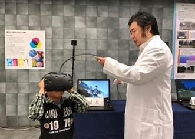

今給黎 隆 (東京工芸大学)
日本デジタルゲーム学会 第12回年次大会 インタラクティブセッション
本研究では、トンボが持つ色覚・広視野をリアルタイムにヘッドマウントディスプレイ(以下HMD)で再現をするシステムを提案する。360度カメラで撮影した動画をストリーミングによりHMDで表示する。HMDに表示する際に、複眼等のトンボの視覚特性を再現するようにリアルタイムに変換することであたかもトンボになったかのような世界を実現する。本研究は、HMDにおける視野拡張を実現するゲームの基礎研究であり、ITを用いた理科教育の一つの実践である。
VR FPSゲームで後ろの人を撃ちたいですよね。もしくは周り人と一度にコミュニケーションをとりたい時があるのではないでしょうか。 これらを実現する分野は視野拡張になります。視野拡張はまだまだ実用化されているとは言えません。
我々は、「カラボギャラリー第2回企画展-色覚を考える展」[1] や生活工房ギャラリー「色覚を考える展-ヒトと動物の色世界-」[2] で、視野拡張の応用アプリケーションとしてトンボになって世界を覗き込むVR作品を展示してきました。 これらの展示では、事前に用意した動画をヘッドマウントディスプレイ(HMD)の向きに応じてトンボの視覚に変換をしていました。
ただ、展示をしている中で気になることがありました。何人かの体験者はHMDの前で手を振っていたのです。 様子を見ると、手を振って自分が入りこむのか試してみて、手が映らないことを確認すると、 中の映像は現在の景色とは関係ないあらかじめ用意された動画なのだと認識しているようでした。 このようなふるまいは何度か見られ、そこから来場者の期待は現在見ている物を他の視覚で見る事なのだなという思いに至りました。

今回、HMDとしてOculus Quest 2を使い、その上ににヘルメットストラップマウントで 360度カメラのRICOH THETAを取り付けました（図では、RICOH THETA Vを設置）。 Oculus Quest 2は、Android OS で動いているので、HTTP通信で直接THETAと通信して、 THETAの360度映像を直接取り込んで加工することは可能に思うのですが、 試してもなかなか上手くいきませんでした (調べると、THETAのAPI実装の問題という記事が見つかるのですが現時点では原因は判明していません)。
現時点では、外部にPCを用意して、外部PCからHTTP通信でTHETAの画像を取得しています。 トンボの視覚への変換はOculus Quest 2でも可能ですが、PCからHMDに映像を送れる「Oculus Link」の機能が便利なので、 Quest 2の情報を外部PCで受け取って映像のレンダリングを行った結果を、Oculus で表示しています。
本研究は、「2021 年度コニカミノルタ科学技術振興財団研究奨励金」の助成を受けています。